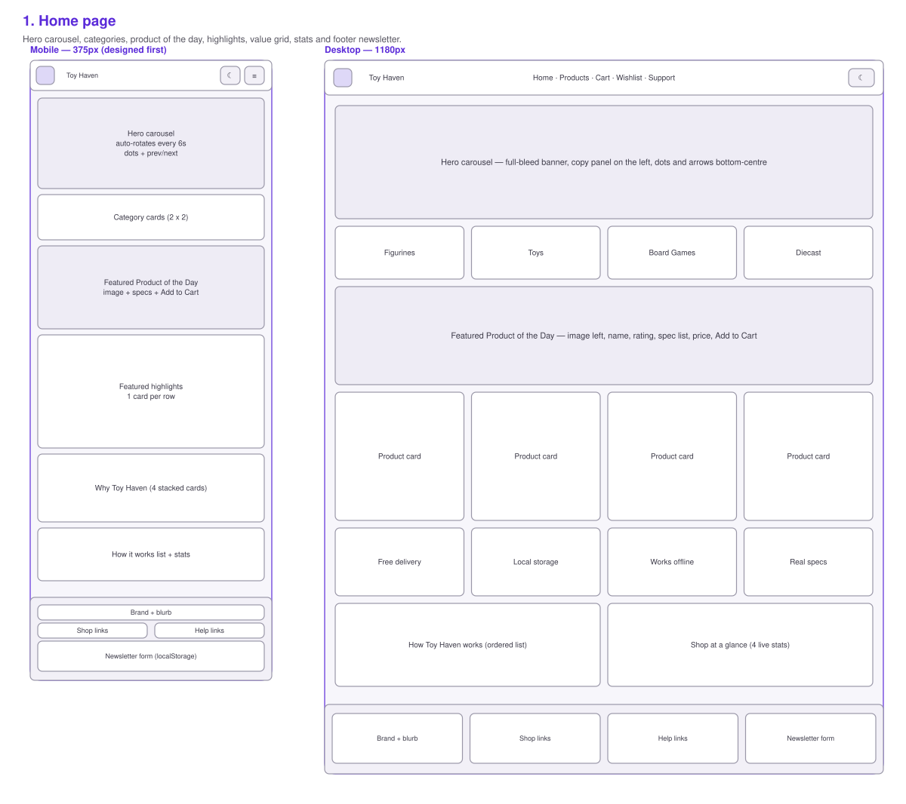
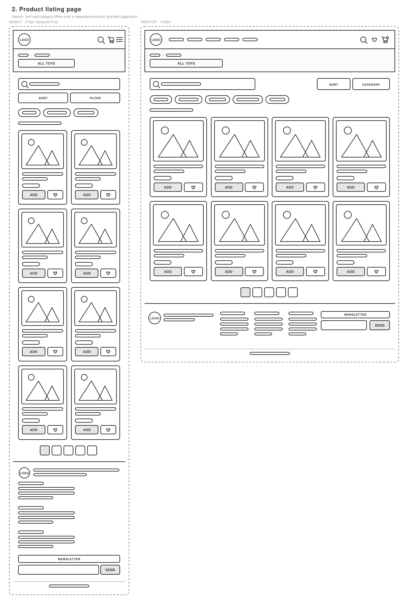
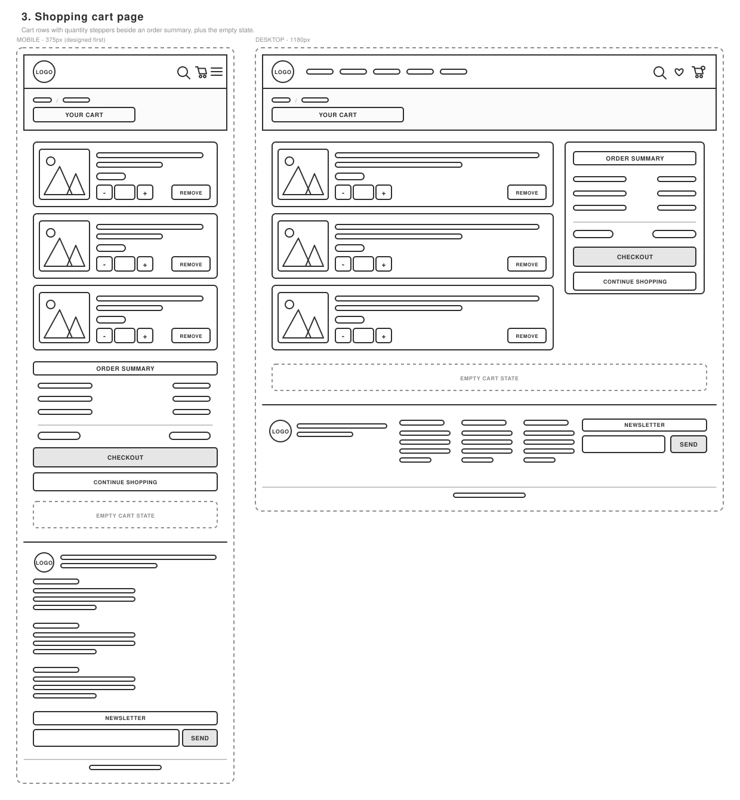
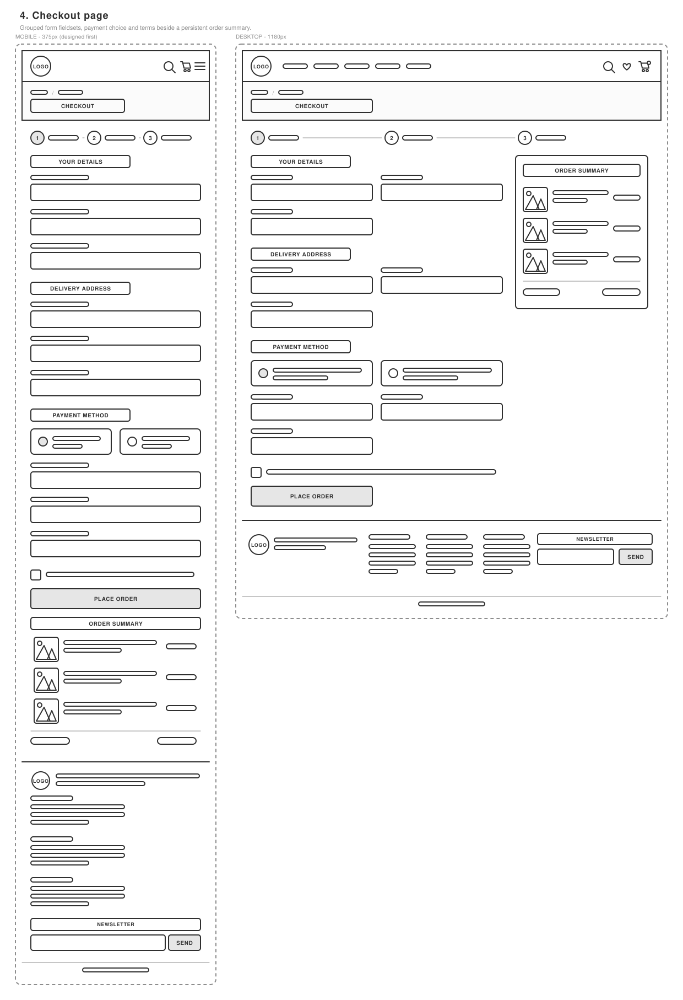
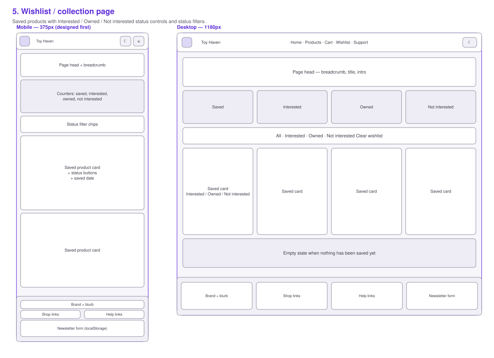
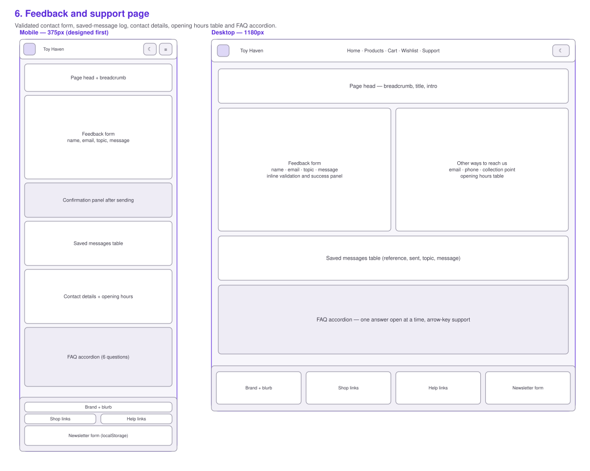

Assignment 3 — COMP40053 — front-end website submission document
Toy Haven is a multi-page front-end store for collectible figurines, toys, board games and
diecast model cars. It was built mobile-first with no frameworks: three organised stylesheets,
one shared JavaScript core and one small script per page. The 24-product catalogue is a JSON
array in js/data.js, so every listing, card, modal, basket row and order line is
rendered from a single source of data.
Because there is no back end, every interaction that a real store would send to a server is
instead written to localStorage: the basket survives a page refresh and a browser
restart, the wishlist keeps a status per product, checkout writes an order into a local history,
and the feedback form stores each message so the visitor can see exactly what was captured.
The site is also a progressive web app — it can be installed to a home screen and previously
visited pages keep working with no connection.
Every page was wireframed at 375px first and then widened, which is why the CSS contains only
min-width media queries: the mobile layout is the default and larger screens add
columns rather than remove them. The breakpoints used throughout are 40em (640px)
for small tablets, 48em (768px) for the modal and footer, 55em (880px)
where the navigation collapses into the animated hamburger, and 60em (960px) for
the full desktop layout.
| Token | Value | Used for |
|---|---|---|
--brand | #5b2bd9 violet | Primary buttons, links, active states, price |
--accent | #ff9f1c amber | Product tags and star ratings |
--mint | #0f8f86 teal | Supporting highlights and value icons |
--rose | #c2255c pink | Wishlist hearts and basket counter |
--ink / --ink-soft | #17161c / #56545f | Body text and secondary text |
--bg / --surface | #faf8f5 / #ffffff | Page background and cards |
--font-display | Fredoka (Google Fonts) | Headings, buttons, prices |
--font-body | Plus Jakarta Sans (Google Fonts) | Body copy, forms, tables |
The same tokens are redefined once under [data-theme="dark"], which is how the
theme switch in the header recolours the entire site without duplicating a single rule. Both
themes were checked for contrast and both pass at AA.
Each wireframe shows the mobile layout that was designed first next to the desktop layout it grows into.






| Page | Features |
|---|---|
| Home | Auto-rotating hero carousel (four promotional banners, 6-second interval, pauses on hover, focus and tab change, arrow-key support, dots and prev/next controls); responsive navigation with an animated hamburger; four category cards; Featured Product of the Day chosen from the calendar date; four top-rated product highlights; value grid; an ordered "how it works" list; live statistics calculated from the catalogue; footer newsletter form saved to localStorage. |
| Products | All 24 products rendered from the JSON catalogue as interactive cards (image, name, category, brand, rating, price); category filter chips with live counts; search by name, brand or category; five sort orders; a shareable query string (?category=toys&q=rocket); a detail modal with a full specification table; Add to Cart and Add to Wishlist on every card; friendly empty state when nothing matches. |
| Basket | Table of line items with product image, name, unit price, quantity stepper, line subtotal and remove; order summary with subtotal, delivery (free over £60, otherwise £4.95), 5% VAT and total; a note showing how much more is needed for free delivery; clear cart; progress indicator; empty state; the basket persists in localStorage. |
| Checkout | Validated form (name, email, phone, address, town, postcode); payment method switch between simulated card and cash on delivery, with card fields shown, formatted and validated only when card is selected; confirmation checkbox; live order summary; on success an animated tick, confetti, an order reference, a "what you ordered" table, the basket cleared and the order written to a local order history table. |
| Wishlist | Everything saved with the heart button, each item markable as Interested, Owned or Not interested; four live counters; status filter chips; move to basket; clear wishlist; empty states for both "nothing saved" and "nothing in this status". |
| Support | Fully validated feedback form (name, email, topic, message with a 10–600 character rule); animated confirmation with a reference; a table of messages stored on the device; contact details; an opening-hours table; a six-question FAQ accordion built with JavaScript, one answer open at a time, with arrow-key navigation. |
| Every page | Skip link, semantic landmarks, sticky header with live basket and wishlist counters, dark/light theme switch, scroll-reveal animations that respect prefers-reduced-motion, toast notifications instead of alert(), favicon set, PWA manifest and service worker. |
js/app.js returns one object, TH, that every page uses; js/components.js
returns THUI, which owns the shared markup. Nothing that appears on more than one page is
written twice.
| Function | Purpose | Used on |
|---|---|---|
TH.formatCurrency() | Formats every price the site shows | All six pages |
TH.read() / TH.write() | Safe JSON read and write to localStorage with error handling | All six pages |
TH.addToCart(), TH.setQty(), TH.cartTotals() | The single cart API — totals, delivery and VAT are calculated in one place | Home, Products, Basket, Checkout, Wishlist |
TH.toggleWishlist(), TH.setWishStatus() | Wishlist storage and status handling | Home, Products, Wishlist |
TH.validateField(), TH.validateForm(), TH.wireLiveValidation() | Rule-driven validation that paints inline errors and re-checks on blur | Newsletter (all pages), Checkout, Support |
TH.toast() | Custom accessible notifications used instead of alert() | All six pages |
TH.getProductOfTheDay() | Picks the daily featured product from the calendar day | Home |
THUI.productCard() | Renders one product card — the same markup everywhere a product appears | Home, Products, Wishlist |
THUI.openProduct() | Opens the detail modal, traps focus and restores it on close | Home, Products, Wishlist |
THUI.emptyState() | Builds the illustrated empty state | Products, Basket, Wishlist |
| ID | Area | Test | Steps | Expected result | Status |
|---|---|---|---|---|---|
| TC-01 | Global | Navigation links | Click each link in the header on every page | The matching page loads and its link is marked as the current page | Pass |
| TC-02 | Global | Animated hamburger menu | Narrow the window below 880px, click the hamburger | The bars animate into a cross, the menu slides open, Escape and choosing a link close it again | Pass |
| TC-03 | Global | Skip link | Press Tab on page load, then Enter | The skip link becomes visible and focus jumps to the main content | Pass |
| TC-04 | Global | Theme switch | Click the moon/sun button, reload the page | The site switches theme immediately and the choice is remembered on the next visit | Pass |
| TC-05 | Global | Basket counter | Add any product to the basket | The header counter increases, animates once and matches the basket contents on every page | Pass |
| TC-06 | Global | Wishlist counter | Save a product with the heart button | The wishlist counter in the navigation increases on every page | Pass |
| TC-07 | Global | Footer newsletter — invalid | Enter "not-an-email" and submit | Submission is blocked and "Enter an email address such as you@example.com." appears under the field | Pass |
| TC-08 | Global | Footer newsletter — valid | Enter collector@example.com and submit | A confirmation appears, a toast is shown and the address is stored under toyhaven.newsletter | Pass |
| TC-09 | Global | Footer newsletter — duplicate | Submit the same address twice | The second attempt reports that the address is already subscribed and is not stored twice | Pass |
| TC-10 | Global | Scroll reveal | Scroll down any page | Sections fade and rise into place once, and do not animate when the operating system requests reduced motion | Pass |
| TC-11 | Home | Carousel auto-rotation | Load the home page and wait | The hero changes slide every six seconds and loops back to the first slide | Pass |
| TC-12 | Home | Carousel controls | Click the next, previous and dot controls | The matching slide is shown, the active dot widens and the timer restarts | Pass |
| TC-13 | Home | Carousel pause | Hover over the hero, then move away | Rotation pauses while hovered or focused and resumes afterwards | Pass |
| TC-14 | Home | Carousel keyboard | Focus the hero and press the left and right arrow keys | The previous and next slides are shown | Pass |
| TC-15 | Home | Hidden slides are not focusable | Tab through the hero | Only the links of the visible slide receive focus | Pass |
| TC-16 | Home | Featured Product of the Day | Load the home page | One product is shown with its rating, three specifications, price and buttons; the same product is shown all day | Pass |
| TC-17 | Home | Featured highlights | Load the home page | The four highest-rated products are rendered as cards from the catalogue | Pass |
| TC-18 | Home | Live statistics | Load the home page | Products, categories, average rating and total reviews are calculated from the data, not hard coded | Pass |
| TC-19 | Home | Category cards | Click a category card | The product page opens filtered to that category | Pass |
| TC-20 | Products | Full catalogue renders | Open the product page | 24 cards are shown, each with image, name, category, rating, brand, age guidance and price | Pass |
| TC-21 | Products | Category filter | Click "Board Games" | Only the six board games remain and the results line reports "Showing 6 of 24 products in Board Games" | Pass |
| TC-22 | Products | Search | Type "rocket" in the search box | Only Cosmo Launch Rocket remains, updating as you type | Pass |
| TC-23 | Products | Search with no results | Type "zzzz" | The grid empties and an empty state offers to reset the shelf | Pass |
| TC-24 | Products | Sorting | Choose "Price: low to high", then "Customer rating" | Cards reorder correctly for each option | Pass |
| TC-25 | Products | Deep link | Open products.html?category=toys&q=rocket | The page opens already filtered and searched, with the chip and search box pre-set | Pass |
| TC-26 | Products | Reset filters | Apply filters, then click Reset filters | All 24 products return, the search box empties and the query string is cleared | Pass |
| TC-27 | Products | Product modal | Click Details on any card | A modal opens with a large image, description, price and a specification table | Pass |
| TC-28 | Products | Modal close and focus | Press Escape, click the backdrop, click the close button | The modal closes each way and focus returns to the button that opened it | Pass |
| TC-29 | Products | Add to cart from a card | Click Add to Cart | A success toast appears and the header counter increases | Pass |
| TC-30 | Products | Add to wishlist from a card | Click the heart | The heart fills, its label changes to "Remove …" and the wishlist counter increases | Pass |
| TC-31 | Basket | Line items | Add three different products and open the basket | Each product appears once with image, unit price, quantity and line subtotal | Pass |
| TC-32 | Basket | Increase quantity | Click + on a line | Quantity, line subtotal and all totals increase immediately | Pass |
| TC-33 | Basket | Decrease to zero | Click − until the quantity reaches zero | The line is removed from the basket and the totals update | Pass |
| TC-34 | Basket | Remove | Click Remove on a line | The line disappears, a toast confirms it and the counter updates | Pass |
| TC-35 | Basket | Delivery threshold | Basket under £60, then over £60 | Delivery is £4.95 with a note about the shortfall, then Free with a confirmation note | Pass |
| TC-36 | Basket | VAT and total | Compare the summary against a manual calculation | VAT is 5% of the subtotal and the total is subtotal + delivery + VAT | Pass |
| TC-37 | Basket | Persistence | Add products, close the browser, reopen the site | The basket is exactly as it was left | Pass |
| TC-38 | Basket | Clear cart | Click Clear cart | Every line is removed and the empty state with a Shop Now button is shown | Pass |
| TC-39 | Checkout | Empty basket | Open the checkout with an empty basket | The form is replaced by a message explaining there is nothing to check out | Pass |
| TC-40 | Checkout | Required fields | Submit the empty form | Ten inline errors appear, focus moves to the first invalid field and nothing is submitted | Pass |
| TC-41 | Checkout | Format rules | Enter "abc" as the email, "12" as the card number, "99/99" as the expiry | Each field reports its own specific message and blocks submission | Pass |
| TC-42 | Checkout | Cash on delivery | Choose Cash on delivery | Card fields are hidden and are no longer required; the order can be placed without them | Pass |
| TC-43 | Checkout | Order confirmation | Complete the form and submit | An animated tick, confetti, an order reference and a table of what was ordered are shown | Pass |
| TC-44 | Checkout | Basket cleared and history saved | Check the header and the history table after ordering | The basket counter returns to zero and the order appears in the local order history | Pass |
| TC-45 | Wishlist | Status marking | Mark a saved product Interested, then Owned | The chosen button is highlighted, the counters update and the choice survives a reload | Pass |
| TC-46 | Wishlist | Status filters and empty state | Filter by Owned with nothing owned | An empty state explains that nothing is marked owned yet | Pass |
| TC-47 | Support | Feedback validation and storage | Submit an empty form, then a valid one | Errors are shown first; the valid message produces a reference, a confirmation panel and a row in the saved-messages table | Pass |
| TC-48 | Support | FAQ accordion | Click several questions, then use the arrow keys | Only one answer is open at a time, the plus icon rotates and the arrow keys move between questions | Pass |
| Page | Errors | Warnings | Result |
|---|---|---|---|
| index.html | 0 | 0 | Pass |
| products.html | 0 | 0 | Pass |
| cart.html | 0 | 0 | Pass |
| checkout.html | 0 | 0 | Pass |
| wishlist.html | 0 | 0 | Pass |
| support.html | 0 | 0 | Pass |
| offline.html | 0 | 0 | Pass |
Two issues were found and fixed during validation: an <aside> nested inside a
section was changed to a titled <section>, and the deprecated space-separated
clip: rect(0 0 0 0) shorthand in the screen-reader utility was rewritten with commas
and paired with clip-path.
| Stylesheet | Errors | Warnings | Result |
|---|---|---|---|
| css/base.css | 0 | 5 — custom properties cannot be checked statically, plus one vendor prefix | Pass |
| css/components.css | 0 | 151 — all "CSS variables are not statically checked" | Pass |
| css/pages.css | 0 | 114 — all "CSS variables are not statically checked" | Pass |
The warnings are informational: the validator cannot resolve the value of a CSS custom property
at validation time, so it reports one warning for each use. The only other warning is the
-webkit-text-size-adjust vendor prefix, which is kept deliberately to stop iOS
Safari inflating text in landscape.
| Page | Errors | Contrast errors | Result |
|---|---|---|---|
| Home | 0 | 0 | Pass |
| Products (including the open modal) | 0 | 0 | Pass |
| Basket | 0 | 0 | Pass |
| Checkout (including the invalid form state) | 0 | 0 | Pass |
| Wishlist | 0 | 0 | Pass |
| Support (including an open FAQ answer) | 0 | 0 | Pass |
Accessibility work that produced those results:
header, nav, main, footer, plus a skip link.role="alert" and linked by aria-invalid.alt on the purely decorative hero backgrounds.aria-pressed on filter, heart and status buttons, aria-expanded on the hamburger and FAQ triggers, aria-current on the active page and slide.aria-hidden and removes their links from the tab order.aria-modal, moves focus to its close button and returns focus to the trigger.alert().prefers-reduced-motion, and both themes meet AA contrast.| Page | Mobile | Desktop | ||||||
|---|---|---|---|---|---|---|---|---|
| Perf. | Access. | Best pr. | SEO | Perf. | Access. | Best pr. | SEO | |
| Home | 99 | 100 | 100 | 100 | 100 | 100 | 100 | 100 |
| Products | 100 | 100 | 100 | 100 | 91 | 100 | 100 | 100 |
| Basket | 100 | 100 | 100 | 100 | 100 | 100 | 100 | 100 |
| Checkout | 100 | 100 | 100 | 100 | 100 | 100 | 100 | 100 |
| Wishlist | 99 | 100 | 100 | 100 | 100 | 100 | 100 | 100 |
| Support | 99 | 100 | 100 | 100 | 100 | 100 | 100 | 100 |
All audits were run with Lighthouse 12.8 in headless Chrome. The first audit scored 84 on mobile. Three changes brought it to 99–100:
<noscript> fallback — this removed 1.75 seconds of render blocking.srcset and sizes.fetchpriority="high", which fixed a slow largest-contentful-paint.| Preset | Performance | Accessibility | Best practices | SEO |
|---|---|---|---|---|
| Mobile | 93 | 100 | 100 | 100 |
| Desktop | 99 | 100 | 100 | 100 |
Live performance is a few points lower than the local audit purely because of network latency: Lighthouse measured a 900 ms server response for the first request and GitHub Pages sets a ten-minute cache lifetime, neither of which can be changed from the site’s code. Total blocking time is 0 ms and cumulative layout shift is 0.029 on both presets.
| Width | Representative device | Behaviour | Result |
|---|---|---|---|
| 320px | iPhone SE (1st gen) | Single column, hamburger menu, one card per row, no horizontal scrolling | Pass |
| 375px | iPhone SE / 13 mini | The reference mobile layout; hero copy panel fits without clipping | Pass |
| 414px | iPhone Pro Max | As 375px with more comfortable spacing | Pass |
| 768px | iPad portrait | Two-column cards, footer becomes four columns, modal becomes two columns | Pass |
| 1024px | iPad landscape / small laptop | Full navigation returns, basket and checkout become two columns, four cards per row | Pass |
| 1280–1600px | Desktop | Content is capped at 1180px and centred, so lines stay readable | Pass |
| Check | Expected | Result |
|---|---|---|
| Manifest | Name, short name, description, scope, start URL, standalone display, theme colours, 192px, 512px and maskable icons, three shortcuts | Pass |
| Favicons | favicon.ico, 32px PNG and a 180px Apple touch icon on every page | Pass |
| Service worker | Registers, activates and pre-caches 32 files of the application shell | Pass |
| Offline | Visited pages open with the network disabled; an unvisited page falls back to offline.html | Pass |
| Install | Chrome offers "Install Toy Haven" and the app opens in its own window | Pass |
toy-haven.main branch, / (root) folder.All paths are relative, so the site works both at the repository sub-path on GitHub Pages and when served from the root of any other server.
js/data.js. It is deliberately shaped like an API response so it could be replaced with a fetch() call without touching the rendering code.